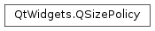

QSizePolicy¶
Synopsis¶
Functions¶
- def
__eq__(s) - def
__ne__(s) - def
controlType() - def
expandingDirections() - def
hasHeightForWidth() - def
hasWidthForHeight() - def
horizontalPolicy() - def
horizontalStretch() - def
retainSizeWhenHidden() - def
setControlType(type) - def
setHeightForWidth(b) - def
setHorizontalPolicy(d) - def
setHorizontalStretch(stretchFactor) - def
setRetainSizeWhenHidden(retainSize) - def
setVerticalPolicy(d) - def
setVerticalStretch(stretchFactor) - def
setWidthForHeight(b) - def
transpose() - def
transposed() - def
verticalPolicy() - def
verticalStretch()
Detailed Description¶
The
PySide2.QtWidgets.QSizePolicyclass is a layout attribute describing horizontal and vertical resizing policy.The size policy of a widget is an expression of its willingness to be resized in various ways, and affects how the widget is treated by the layout engine . Each widget returns a
PySide2.QtWidgets.QSizePolicythat describes the horizontal and vertical resizing policy it prefers when being laid out. You can change this for a specific widget by changing itsQWidget.sizePolicyproperty.
PySide2.QtWidgets.QSizePolicycontains two independentQSizePolicy.Policyvalues and two stretch factors; one describes the widgets’s horizontal size policy, and the other describes its vertical size policy. It also contains a flag to indicate whether the height and width of its preferred size are related.The horizontal and vertical policies can be set in the constructor, and altered using the
PySide2.QtWidgets.QSizePolicy.setHorizontalPolicy()andPySide2.QtWidgets.QSizePolicy.setVerticalPolicy()functions. The stretch factors can be set using thePySide2.QtWidgets.QSizePolicy.setHorizontalStretch()andPySide2.QtWidgets.QSizePolicy.setVerticalStretch()functions. The flag indicating whether the widget’sPySide2.QtWidgets.QWidget.sizeHint()is width-dependent (such as a menu bar or a word-wrapping label) can be set using thePySide2.QtWidgets.QSizePolicy.setHeightForWidth()function.The current size policies and stretch factors be retrieved using the
PySide2.QtWidgets.QSizePolicy.horizontalPolicy(),PySide2.QtWidgets.QSizePolicy.verticalPolicy(),PySide2.QtWidgets.QSizePolicy.horizontalStretch()andPySide2.QtWidgets.QSizePolicy.verticalStretch()functions. Alternatively, use thePySide2.QtWidgets.QSizePolicy.transpose()function to swap the horizontal and vertical policies and stretches. ThePySide2.QtWidgets.QSizePolicy.hasHeightForWidth()function returns the current status of the flag indicating the size hint dependencies.Use the
PySide2.QtWidgets.QSizePolicy.expandingDirections()function to determine whether the associated widget can make use of more space than itsPySide2.QtWidgets.QWidget.sizeHint()function indicates, as well as find out in which directions it can expand.Finally, the
PySide2.QtWidgets.QSizePolicyclass provides operators comparing this size policy to a given policy, as well as aPySide2.QtCore.QVariantoperator storing thisPySide2.QtWidgets.QSizePolicyas aPySide2.QtCore.QVariantobject.
-
class
PySide2.QtWidgets.QSizePolicy¶ -
class
PySide2.QtWidgets.QSizePolicy(horizontal, vertical[, type=DefaultType]) Parameters: - type –
PySide2.QtWidgets.QSizePolicy.ControlType - horizontal –
PySide2.QtWidgets.QSizePolicy.Policy - vertical –
PySide2.QtWidgets.QSizePolicy.Policy
Constructs a
PySide2.QtWidgets.QSizePolicyobject withFixedas its horizontal and vertical policies.The policies can be altered using the
PySide2.QtWidgets.QSizePolicy.setHorizontalPolicy()andPySide2.QtWidgets.QSizePolicy.setVerticalPolicy()functions. Use thePySide2.QtWidgets.QSizePolicy.setHeightForWidth()function if the preferred height of the widget is dependent on the width of the widget (for example, aPySide2.QtWidgets.QLabelwith line wrapping).See also
PySide2.QtWidgets.QSizePolicy.setHorizontalStretch()PySide2.QtWidgets.QSizePolicy.setVerticalStretch()Constructs a
PySide2.QtWidgets.QSizePolicyobject with the givenhorizontalandverticalpolicies, and the specified controltype.Use
PySide2.QtWidgets.QSizePolicy.setHeightForWidth()if the preferred height of the widget is dependent on the width of the widget (for example, aPySide2.QtWidgets.QLabelwith line wrapping).- type –
-
PySide2.QtWidgets.QSizePolicy.PolicyFlag¶ These flags are combined together to form the various
QSizePolicy.Policyvalues:Constant Description QSizePolicy.GrowFlag The widget can grow beyond its size hint if necessary. QSizePolicy.ExpandFlag The widget should get as much space as possible. QSizePolicy.ShrinkFlag The widget can shrink below its size hint if necessary. QSizePolicy.IgnoreFlag The widget’s size hint is ignored. The widget will get as much space as possible. See also
QSizePolicy.Policy
-
PySide2.QtWidgets.QSizePolicy.Policy¶ This enum describes the various per-dimension sizing types used when constructing a
PySide2.QtWidgets.QSizePolicy.Constant Description QSizePolicy.Fixed The QWidget.sizeHint()is the only acceptable alternative, so the widget can never grow or shrink (e.g. the vertical direction of a push button).QSizePolicy.Minimum The sizeHint() is minimal, and sufficient. The widget can be expanded, but there is no advantage to it being larger (e.g. the horizontal direction of a push button). It cannot be smaller than the size provided by sizeHint(). QSizePolicy.Maximum The sizeHint() is a maximum. The widget can be shrunk any amount without detriment if other widgets need the space (e.g. a separator line). It cannot be larger than the size provided by sizeHint(). QSizePolicy.Preferred The sizeHint() is best, but the widget can be shrunk and still be useful. The widget can be expanded, but there is no advantage to it being larger than sizeHint() (the default PySide2.QtWidgets.QWidgetpolicy).QSizePolicy.Expanding The sizeHint() is a sensible size, but the widget can be shrunk and still be useful. The widget can make use of extra space, so it should get as much space as possible (e.g. the horizontal direction of a horizontal slider). QSizePolicy.MinimumExpanding The sizeHint() is minimal, and sufficient. The widget can make use of extra space, so it should get as much space as possible (e.g. the horizontal direction of a horizontal slider). QSizePolicy.Ignored The sizeHint() is ignored. The widget will get as much space as possible. See also
QSizePolicy.PolicyFlagPySide2.QtWidgets.QSizePolicy.setHorizontalPolicy()PySide2.QtWidgets.QSizePolicy.setVerticalPolicy()
-
PySide2.QtWidgets.QSizePolicy.ControlType¶ This enum specifies the different types of widgets in terms of layout interaction:
Constant Description QSizePolicy.DefaultType The default type, when none is specified. QSizePolicy.ButtonBox A PySide2.QtWidgets.QDialogButtonBoxinstance.QSizePolicy.CheckBox A PySide2.QtWidgets.QCheckBoxinstance.QSizePolicy.ComboBox A PySide2.QtWidgets.QComboBoxinstance.QSizePolicy.Frame A PySide2.QtWidgets.QFrameinstance.QSizePolicy.GroupBox A PySide2.QtWidgets.QGroupBoxinstance.QSizePolicy.Label A PySide2.QtWidgets.QLabelinstance.QSizePolicy.Line A PySide2.QtWidgets.QFrameinstance withQFrame.HLineorQFrame.VLine.QSizePolicy.LineEdit A PySide2.QtWidgets.QLineEditinstance.QSizePolicy.PushButton A PySide2.QtWidgets.QPushButtoninstance.QSizePolicy.RadioButton A PySide2.QtWidgets.QRadioButtoninstance.QSizePolicy.Slider A PySide2.QtWidgets.QAbstractSliderinstance.QSizePolicy.SpinBox A PySide2.QtWidgets.QAbstractSpinBoxinstance.QSizePolicy.TabWidget A PySide2.QtWidgets.QTabWidgetinstance.QSizePolicy.ToolButton A PySide2.QtWidgets.QToolButtoninstance.
-
PySide2.QtWidgets.QSizePolicy.controlType()¶ Return type: PySide2.QtWidgets.QSizePolicy.ControlTypeReturns the control type associated with the widget for which this size policy applies.
-
PySide2.QtWidgets.QSizePolicy.expandingDirections()¶ Return type: PySide2.QtCore.Qt.OrientationsReturns whether a widget can make use of more space than the
QWidget.sizeHint()function indicates.A value of
Qt.HorizontalorQt.Verticalmeans that the widget can grow horizontally or vertically (i.e., the horizontal or vertical policy isExpandingorMinimumExpanding), whereasQt.Horizontal|Qt.Verticalmeans that it can grow in both dimensions.
-
PySide2.QtWidgets.QSizePolicy.hasHeightForWidth()¶ Return type: PySide2.QtCore.boolReturns
trueif the widget’s preferred height depends on its width; otherwise returnsfalse.
-
PySide2.QtWidgets.QSizePolicy.hasWidthForHeight()¶ Return type: PySide2.QtCore.boolReturns
trueif the widget’s width depends on its height; otherwise returnsfalse.
-
PySide2.QtWidgets.QSizePolicy.horizontalPolicy()¶ Return type: PySide2.QtWidgets.QSizePolicy.PolicyReturns the horizontal component of the size policy.
-
PySide2.QtWidgets.QSizePolicy.horizontalStretch()¶ Return type: PySide2.QtCore.intReturns the horizontal stretch factor of the size policy.
-
PySide2.QtWidgets.QSizePolicy.__ne__(s)¶ Parameters: s – PySide2.QtWidgets.QSizePolicyReturn type: PySide2.QtCore.boolReturns
trueif this policy is different fromother; otherwise returnsfalse.See also
PySide2.QtWidgets.QSizePolicy.operator==()
-
PySide2.QtWidgets.QSizePolicy.__eq__(s)¶ Parameters: s – PySide2.QtWidgets.QSizePolicyReturn type: PySide2.QtCore.boolReturns
trueif this policy is equal toother; otherwise returnsfalse.See also
PySide2.QtWidgets.QSizePolicy.operator!=()
-
PySide2.QtWidgets.QSizePolicy.retainSizeWhenHidden()¶ Return type: PySide2.QtCore.boolReturns whether the layout should retain the widget’s size when it is hidden. This is
falseby default.
-
PySide2.QtWidgets.QSizePolicy.setControlType(type)¶ Parameters: type – PySide2.QtWidgets.QSizePolicy.ControlTypeSets the control type associated with the widget for which this size policy applies to
type.The control type specifies the type of the widget for which this size policy applies. It is used by some styles, notably QMacStyle, to insert proper spacing between widgets. For example, the macOS Aqua guidelines specify that push buttons should be separated by 12 pixels, whereas vertically stacked radio buttons only require 6 pixels.
-
PySide2.QtWidgets.QSizePolicy.setHeightForWidth(b)¶ Parameters: b – PySide2.QtCore.boolSets the flag determining whether the widget’s preferred height depends on its width, to
dependent.
-
PySide2.QtWidgets.QSizePolicy.setHorizontalPolicy(d)¶ Parameters: d – PySide2.QtWidgets.QSizePolicy.PolicySets the horizontal component to the given
policy.
-
PySide2.QtWidgets.QSizePolicy.setHorizontalStretch(stretchFactor)¶ Parameters: stretchFactor – PySide2.QtCore.intSets the horizontal stretch factor of the size policy to the given
stretchFactor.stretchFactormust be in the range [0,255].When two widgets are adjacent to each other in a horizontal layout, setting the horizontal stretch factor of the widget on the left to 2 and the factor of widget on the right to 1 will ensure that the widget on the left will always be twice the size of the one on the right.
-
PySide2.QtWidgets.QSizePolicy.setRetainSizeWhenHidden(retainSize)¶ Parameters: retainSize – PySide2.QtCore.boolSets whether a layout should retain the widget’s size when it is hidden. If
retainSizeistrue, the layout will not be changed by hiding the widget.
-
PySide2.QtWidgets.QSizePolicy.setVerticalPolicy(d)¶ Parameters: d – PySide2.QtWidgets.QSizePolicy.PolicySets the vertical component to the given
policy.
-
PySide2.QtWidgets.QSizePolicy.setVerticalStretch(stretchFactor)¶ Parameters: stretchFactor – PySide2.QtCore.intSets the vertical stretch factor of the size policy to the given
stretchFactor.stretchFactormust be in the range [0,255].When two widgets are adjacent to each other in a vertical layout, setting the vertical stretch factor of the widget on the top to 2 and the factor of widget on the bottom to 1 will ensure that the widget on the top will always be twice the size of the one on the bottom.
-
PySide2.QtWidgets.QSizePolicy.setWidthForHeight(b)¶ Parameters: b – PySide2.QtCore.boolSets the flag determining whether the widget’s width depends on its height, to
dependent.This is only supported for QGraphicsLayout ‘s subclasses. It is not possible to have a layout with both height-for-width and width-for-height constraints at the same time.
-
PySide2.QtWidgets.QSizePolicy.transpose()¶ Swaps the horizontal and vertical policies and stretches.
-
PySide2.QtWidgets.QSizePolicy.transposed()¶ Return type: PySide2.QtWidgets.QSizePolicyReturns a size policy object with the horizontal and vertical policies and stretches swapped.
-
PySide2.QtWidgets.QSizePolicy.verticalPolicy()¶ Return type: PySide2.QtWidgets.QSizePolicy.PolicyReturns the vertical component of the size policy.
-
PySide2.QtWidgets.QSizePolicy.verticalStretch()¶ Return type: PySide2.QtCore.intReturns the vertical stretch factor of the size policy.
© 2018 The Qt Company Ltd. Documentation contributions included herein are the copyrights of their respective owners. The documentation provided herein is licensed under the terms of the GNU Free Documentation License version 1.3 as published by the Free Software Foundation. Qt and respective logos are trademarks of The Qt Company Ltd. in Finland and/or other countries worldwide. All other trademarks are property of their respective owners.